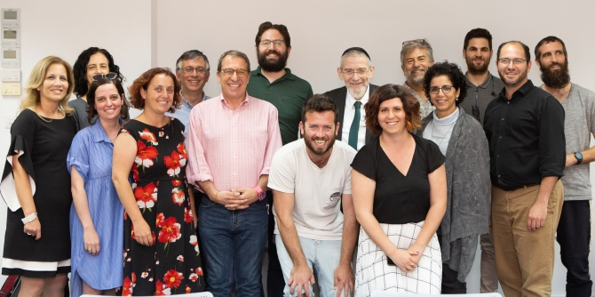
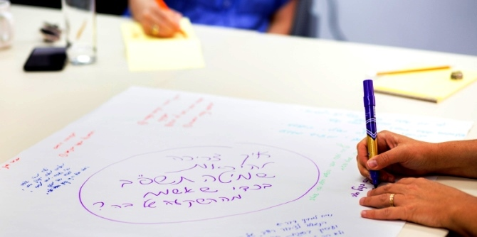

את המפגש, שנערך ב-26 במאי, ריכז מישאל ציון, מנהל תוכנית מנדל למנהיגות בתרבות יהודית, והובילו נייג'ל סאבאג', נשיא "חזון: המעבדה היהודית לקיימות" (ארה״ב), הרב מיכאל מלכיאור, לשעבר השר לאיכות הסביבה והשר לענייני תפוצות וכיום, בין השאר, נשיא ארגון "טבע עברי", וכן עינט קרמר, מנהלת ״טבע עברי״ ואהרון אריאל לביא מארגון ״חזון״.
״חלימת חלומות גדולים ותכנון לטווח ארוך הם שניים מהמאפיינים המרכזיים של דגם המנהיגות שאנו מבקשים לקדם במכון מנדל למנהיגות״, אמר מישאל ציון בפתח המפגש, ״ואנו רואים בשנת השמיטה הזדמנות לקדם בחברה הישראלית מגוון מעשים בעלי חזון רחב לתרבות יהודית. שנת השמיטה היא שנת השבתון של העם היהודי, ומהווה הזדמנות לשיח רענן בנושאים של סולידריות, חינוך, סביבה, שוויון חברתי, כלכלה ויחס לארץ ולאדמה״.
הרב מיכאל מלכיאור ציין כי ״בעבר ההתעסקות הציבורית בשנת השמיטה נגעה אך ורק לאתגרי האיסור וההיתר החקלאי בשנה זו, והשפיעה רק על ציבורים מצומצמים ביותר. אך בסבבי השמיטה הקודמים החל להתגבש שיח חברתי ענף סביב שנת השמיטה, בין השאר דרך יוזמות של ארגונים כגון 'טבע עברי', 'פעמונים' ורבים נוספים״.
עינט קרמר סקרה את הפעילויות שהתקיימו בשנת השמיטה הקודמת, והציגה את החזון של ״טבע עברי״ לשנת השמיטה תשפ״ב: "שנת השמיטה תשפ״ב תהיה שנה מרכזית של שיח ועשייה חברתית-סביבתית-כלכלית בישראל ברמה הלאומית, ומנותבים לכך משאבי מדינה דרך ועדת שמיטה ממלכתית. ישנה התגייסות לעניין זה גם מצד משרדי הממשלה הרלוונטיים (החינוך, הסביבה והרווחה)", אמרה. ״תפקידנו כעת הוא לשנע מחדש את המערכת שפעלה בשמיטה הקודמת, בצורה רחבה הרבה יותר. זהו הצעד הראשון לקראת ריצת המרתון של שנת השבתון הישראלית".

למפגש הוזמנו אנשי רעיון ומעשה מהמגזר הציבורי והאזרחי, מעולם התרבות, החינוך והקהילה. יחד עם נציגים מארגונים שונים העוסקים בשנת השמיטה הונחה התשתית ל״קואליציית שמיטה״, האמונה על הנעת תהליכים חברתיים-סביבתיים-כלכליים לקראת שנת השמיטה הבאה. משתתפי הכינוס יצאו ל״מעגלי חלימה״, לדון באפשרויות ליוזמות ופעולות בשנת השמיטה הקרובה, וכן דנו בשותפים הנדרשים ובפעולות הראשוניות שיש לנקוט.
״איש לא מתחיל להתכונן לשבת ביום שישי בצהריים", אמר נייג'ל סאבאג'. "כך גם אנו צריכים להתחיל להתכונן לשנת השביעי כבר עתה, עם סוף השנה הרביעית לשמיטה. זו הזדמנות חשובה לדון גם במשברים ובאתגרים ששנת השמיטה מאפשרת להם מבט חדש ורענן: היחס לאדמה לאור משבר האקלים, שאלת הסולידריות האזרחית והלאומית לאור יחסי ישראל-תפוצות, ושאלות של אי-שוויון בחברה הישראלית".
"כדי שפעולות משמעותיות יתרחשו בשנת השמיטה הקרובה, יש למקד מטרות ולקבץ את השותפים הנכונים תוך מחשבה על המגוון הרחב בחברה הישראלית והיהודית", סיכמה
יעל הס, מנהלת מכון מנדל למנהיגות. "אנו גאים לארח מפגש שכזה אצלנו במכון, ומצפים לראות את מעשי המנהיגות שינקטו משתתפי המפגש בעתיד".

{kind=link}
{kind=link}